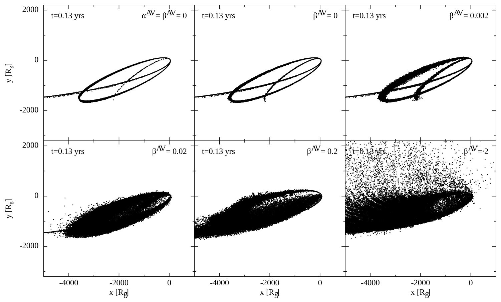

On the Origin of Anomalous Dissipation in Simulations of Tidal Disruption Events
C. J. Nixon, E. R. Coughlin, & Z. L. Andalman
preprint • 2026
Abstract
In a tidal disruption event (TDE), a star is destroyed by the tidal field of a supermassive black hole. The stellar debris is initially placed on highly elliptical orbits, and a longstanding question in TDE theory is: How does the stellar debris circularize into a disc and accrete? The originally proposed answer to this question is self-intersection shocks, where relativistic apsidal precession results in a strong collision between the incoming and outgoing material. However, global simulations of TDEs tend to find enhanced hydrodynamical dissipation prior to any intersections of the debris orbits, with the material "fanning out" into a wide-angle and partially-unbound outflow upon passing through pericenter. We show that this dissipation is numerical in origin and arises from a combination of 1) the change in the kinematics of the debris as it passes through pericenter, with its velocity profile along the stream transitioning from strongly diverging pre-pericenter to strongly converging post-pericenter, and 2) the dependence of numerical algorithms (viscosity switches for particle-based methods and Riemann solvers for Godunov-based schemes) on the diverging vs. converging nature of the fluid. We support this conclusion with analytical and numerical modeling. We discuss possible resolutions to these issues as well as the implications of our findings in the context of observations.
